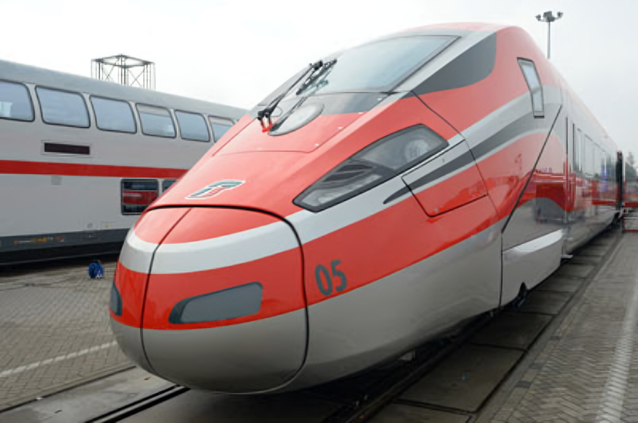
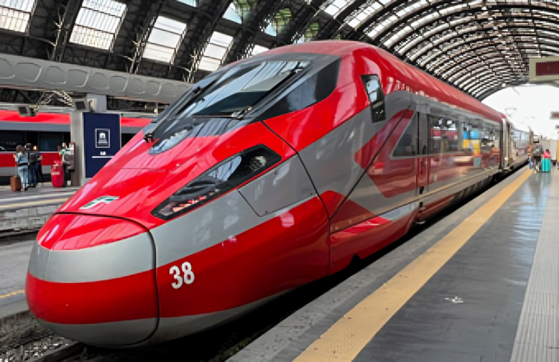
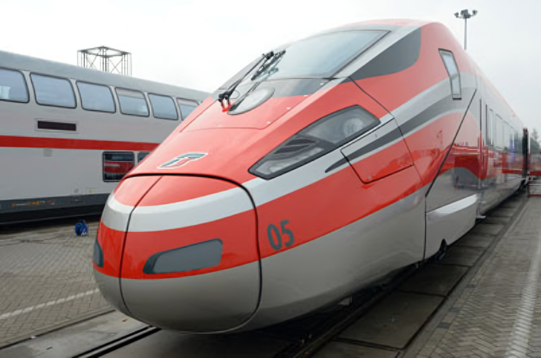
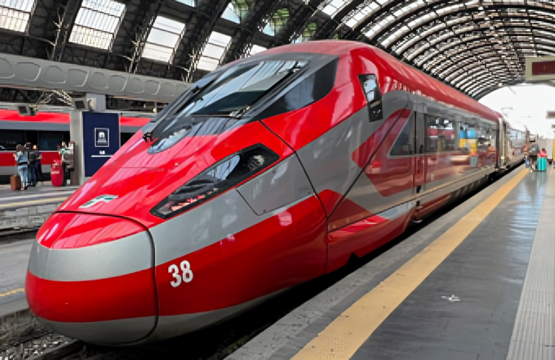

Frecciarossa 1000 е високоскоростен влак, управляван от италианския държавен
железопътен оператор Trenitalia и частния испански високоскоростен железопътен
оператор Iryo. Той е разработен съвместно като съвместно предприятие между
италианския производител на железопътни превози Hitachi Rail Italy (първоначално
AnsaldoBreda) и мултинационалния конгломерат Alstom (първоначално Bombardier Transportation).
Работата по проектирането и производството бяха разделени между
двете партньорски компании. Работата по дизайна на влака започна през 2008 г. със
значителна дизайнерска работа, извършена от Майк Робинсън и Бертоне. Той се
основаваше до голяма степен на съществуващи продукти, включително влаковете Zefiro
на Bombardier и V250 на AnsaldoBreda. Дизайнът е модифициран, за да отговаря на изискванията на търга на Trenitalia. През 2010 г. беше избран Frecciarossa 1000 и бяха поръчани общо 50 влакови композиции, за да отговорят на нуждите на Trenitalia.
След публичното разкриване на първия екземпляр от типа, той беше приветстван като
най-бързия влак, достигнал серийно производство в Европа по това време.